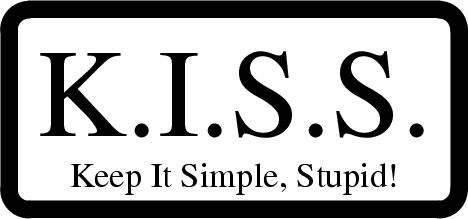

The Unix Philosophy in One Lesson
All the philosophy really boils down to one iron law, the
hallowed ‘KISS
principle’ of master engineers everywhere:

Unix gives you an excellent base for applying the KISS principle.
The remainder of this book will help you learn how.